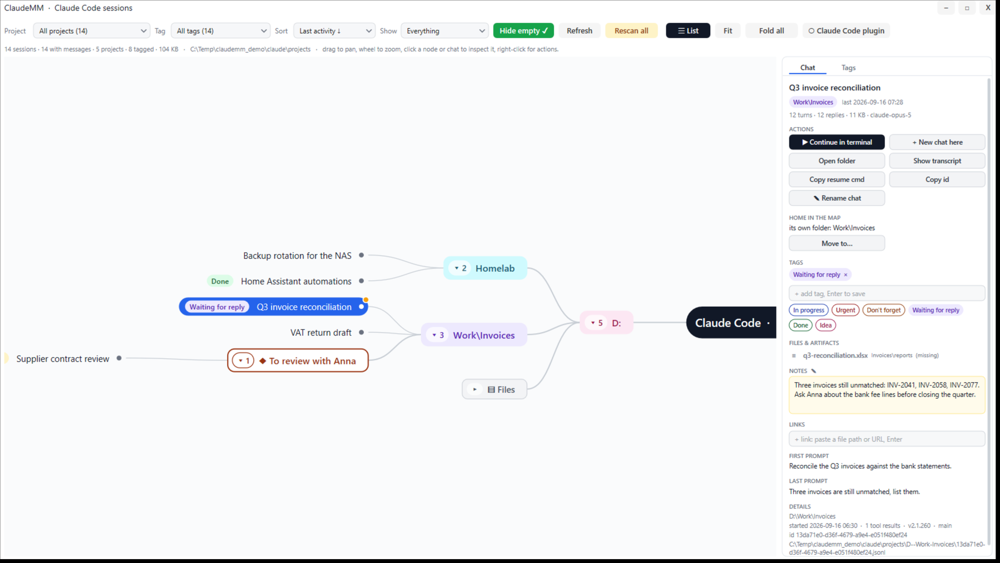
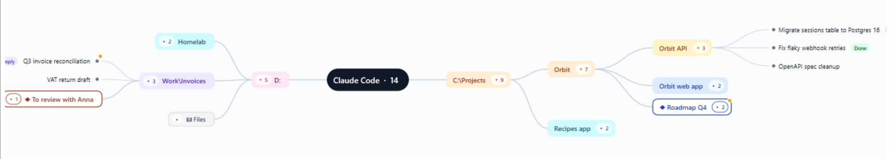

ClaudeMM
A mind map of your Claude Code sessions, for Windows.
Find the chat you had three weeks ago, organise your projects the way you think, and let Claude search it all.
Windows 10/11 (x64) · installer, about 2 MB · all releases

Install as a Claude Code plugin (recommended)
Gives every Claude Code session — terminal or desktop app — the /claudemm:mm and /claudemm:tag commands, the MCP tools (search your sessions, tag and note the chat you are in, list and start your dev servers) and the live hooks that make the map pulse.
claude plugin marketplace add vider73/claudemm
claude plugin install claudemm@chronoscanThen start the ClaudeMM window from the plugin folder once, or use the installer below to get a Start Menu entry.
Or run the Windows installer
- Download ClaudeMM-Setup-1.4.2.exe and run it. It adds a Start Menu entry and offers to register the plugin with Claude Code.
- Nothing is uploaded anywhere: ClaudeMM only reads the transcripts Claude Code already keeps on your disk, and writes its own tags, notes and map layout under
%APPDATA%\ChronoUI.
The installer is not code-signed yet, so Windows SmartScreen or your browser may hesitate: in the browser choose Keep, and on the blue SmartScreen dialog More info → Run anyway. The file is published from the GitHub release of the same version.
What you get
- The map. Every working directory a branch, every chat a leaf; your own nodes in between, drag chats into them. Live sessions pulse.
- Chats that unfold. Their note, the artifacts they published, the files they wrote; folders carry an Artifacts branch.
- Your dev servers. Every project that runs something on a local port: which ports listen right now, Open / Start / Stop.
- Search, tags and notes across everything, and Claude tags the chat it is in on its own.
